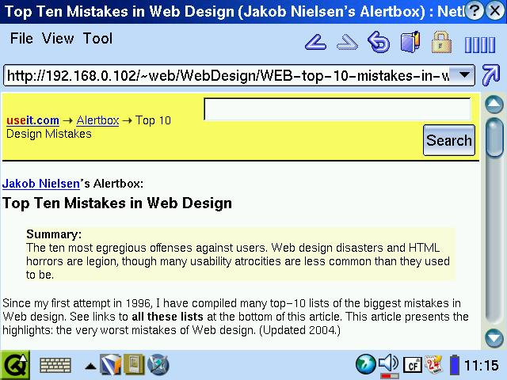
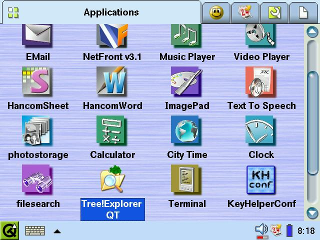

...making Linux just a little more fun!
By Edgar Howell
Sharp's latest PDA -- I'll use that term although it really doesn't do it justice -- is a real killer, irresistible to incorrigible Linuxers. I'm not even going to try to pretend to be objective about it.
A bit over $500 for a PDA may be a bit pricey but this is far more than a mere PDA. After all, the system is Linux - 2.4.20, but Linux. And this gem has more hard disk storage and RAM/ROM than all but the last two machines I've purchased.
I've had the SL-5500 for a bit over 3 years and it has functioned perfectly all that time. But when I heard that the SL-C3200 has a 6GB hard drive, I had to have one.
It has an infrared port, basically used to transfer data between two Zauri. When my wife got her 5500, I gave her much of the contents of my address book via infrared.
The USB port is quite interesting. If you use the extremely short cable, you can connect things like USB sticks to the Zaurus. With the considerably longer cable you can connect the Zaurus to a PC and it will function as a storage device; this allows access to the hard drive, although as best I can tell, not to RAM or ROM. And for those so inclined, the USB interface works fine with Windows.
After copying the persistent settings for Knoppix from a USB stick to the
Zaurus hard drive, I removed the USB stick and booted the notebook
under Knoppix telling it to scan for the settings.
It worked, of course.
This beats just Knoppix and a USB stick because of the amount of storage
and the ability to actually do something away from a PC.
Remember, this is a mere PDA... or is it?
The keyboard is English with a few Japanese characters. The alphabetics are where one expects but many of the other characters are somewhere else. As I recall on that keyboard the '*' is with the '8' but here it is an alternate on the 'J'. That's a minor irritant, really -- the size precludes touch-typing anyhow.
There are slots for SD Card and Compact Flash. Given the size of the hard drive, it is not backed up with the Zaurus backup application; in fact, until I get a larger SD card, backing up takes place to the hard drive - so the contents of the HD and the backup file need to be transfered somewhere else. Not a problem via USB.
The screen is quite nice. Much like a notebook, it folds open above the keyboard. But it can then be pivoted 180 degrees and closed on top of the keyboard to enable use while held with one hand rather than having to be placed on some surface. There is a scroll wheel and buttons for OK and Cancel that can be operated with your thumb. The display is easily changed from landscape to portrait. It works, but the need is dependent on the application.
The CF network card I have used with the 5500 works flawlessly in this device as well. Oddly, I couldn't configure it with 'ifconfig' - but the network application was easy enough to use. You can either give it a fixed IP address or -- if your LAN has a DHCP server -- let it get one automatically. Well... more or less automatically: once you tell it to do so, it will.
Although the screen isn't much larger than on the 5500, the resolution is much better - and in landscape mode, it was quite easy to use the browser application (not Opera as on the 5500) to read documents on the Apache server on the LAN.
The battery seems to hold up quite well. After first being charged it worked for well over 4 hours, although I made no effort to make it easy on the battery. One week I used it well over an hour every day and didn't have to re-charge it until the weekend.
The Zaurus doesn't offer multiple virtual terminals or a choice of GUI but one of the applications is a command line. The keyboard is too small for touch-typing, but I still prefer it to using the stylus with an on-screen keyboard. The usual functionality is there, history (arrow-keys, not "!"), tabbed completion (although not for root). I do miss "less", though. "more" just isn't "less".
The 5500 included a number of applications that could be installed from CD-ROM. There were a few apps for the C3200 as well, but nothing that seemed of interest to me; however, there was a comment in the documentation that software for the 5500 would also run on the C3200.
Regarding additional software, I did check out my favorite trivial test-case: solitaire. Search engines didn't help -- far too many stale links. But a reference in the documentation to www.elsix.org (Embedded Linux Software Index) was heads-up. Under Zsolitaire, there were references to 4 varieties, including one for OpenZaurus. The installation was simple: download to PC, copy to SD Card, and run the installation application - a piece of cake. This works equally well when the package has been copied via USB to the hard drive. De-installation worked as advertised.
The 3200 comes with a rather useful collection of applications, at least when considered as a PDA: calendar, address book, to-do list, text editor, e-mail, music and video players, spreadsheet, calculator, PDF viewer.
Apparently the music software is quite efficient. During one 5-minute piece the hard drive was only accessed about every minute - no need to stress the battery. Well done, as I have come to expect from Linux and Sharp.
Did I just say "well done"?
It struck me as odd that an application to play music under Linux
apparently can't handle the OGG Vorbis format - only MP3s. For those who
would like to see what it takes to freely flip between the various formats,
as well as the CD-to-HD-to-Zaurus transfers (assuming that this is legal
where you live), you should take a look at my other
article this month.
If you get one, be sure to back it up as soon as you have taken care of initial set-up. It may have been something I did, or failed to do, but I ended up with the same problem as I had with the 5500: I couldn't log on as root. The early back-up lets you restore the 3200 to a relatively pristine condition. It is possible to set a password for root - but not for long. Or at least so it would seem; your mileage may vary.
Although the infrared port can be used to transfer entries in the address book or to-do list from one machine to another, this doesn't work with spreadsheets and other text files (isn't offered in the menu). This was only a minor inconvenience, since 'find' and 'cp' on the command line along with an SD card worked fine for everything else; this lack just seems to be an odd gap.
While sniffing around the 'net I was unable to find an application to display HTML available on the Zaurus. The 5500 included Opera - but that wasn't the case here. The network application works well to connect to a server over a LAN but can't do anything with a simple HTML file on the Zaurus. This seems like an odd omission.
Then there was the time when the Zaurus locked up and would not turn on, or at least it seemed so at first. It was on, just no information being transfered to the display. Following the directions for a command line boot, I was able to backup a couple of things that would have been a bit of a pain to re-construct and after that it worked again no trouble. The supplier hadn't encountered the problem and it isn't something I can make happen. They are waiting for more information that I hope I won't be able to supply.
Given that a reboot resolves the problem, it seems much like initial problems with usbfs, when too many insertions and removals of USB devices led to confusion as to what was there and wasn't. Reboot helped there as well. On the Zaurus it does require a bit of manual dexterity but otherwise isn't difficult to perform. Fortunately, it does not result in any data loss.
Once you're looking at anything outside the Zaurus itself, Sharp seems to be very Windows-centric. The CD-ROMs have the usual junk needed to communicate with that environment. It was much the same for the 5500; e.g., software installation was via an interface that only talked with Windows. On this machine, installation is from hard drive or external media. On the other hand, given network connectivity, what more does one really need under Linux?
The biggest problem is the fact that Sharp some time ago withdrew from the international market and only makes the Zaurus line for their domestic market in Japan. The company from which I bought the C3200, www.trisoft.de, has been distributing the Zaurus for a number of years and referenced a partner company in the States, www.streamlinecpus.com.
They import them, convert the software from Japanese to English and sell them to the incorrigible. The modest documentation they can provide here in German is OK but might not be enough for someone not yet used to the Zaurus. I really couldn't do a great deal with 2 manuals and 3 CD-ROMs in Japanese.
As I sit here writing this while listening to the Brandenburg Concertos off the Zaurus, life is good. Every serious Linuxer deserves a Zaurus.
I just wish someone could convince Sharp to get back into the international market.
Talkback: Discuss this article with The Answer Gang
(Note: mail that does not contain "linuxgazette" in the subject will be
rejected.)
 Edgar is a consultant in the Cologne/Bonn area in Germany.
His day job involves helping a customer with payroll, maintaining
ancient IBM Assembler programs, some occasional COBOL, and
otherwise using QMF, PL/1 and DB/2 under MVS.
Edgar is a consultant in the Cologne/Bonn area in Germany.
His day job involves helping a customer with payroll, maintaining
ancient IBM Assembler programs, some occasional COBOL, and
otherwise using QMF, PL/1 and DB/2 under MVS.